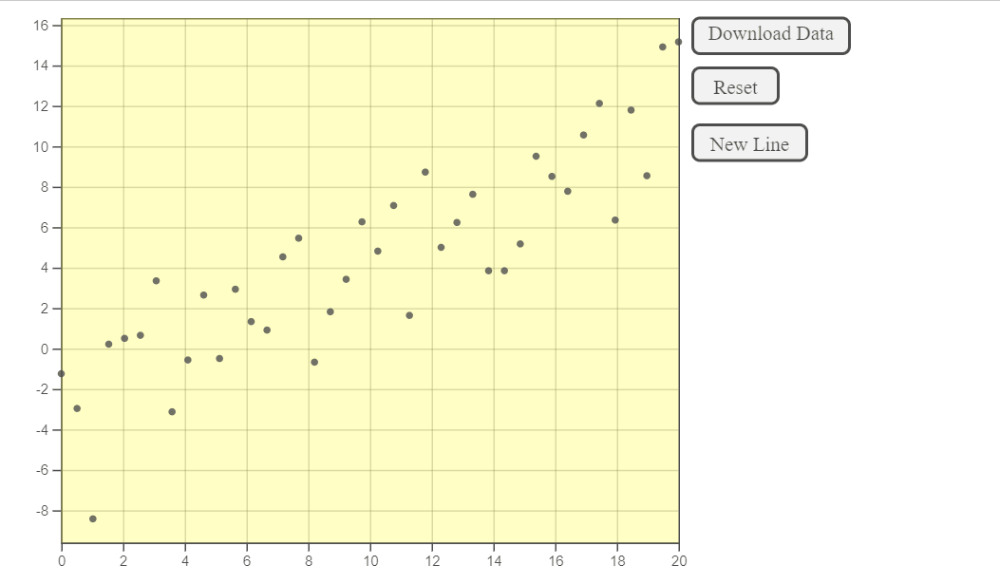
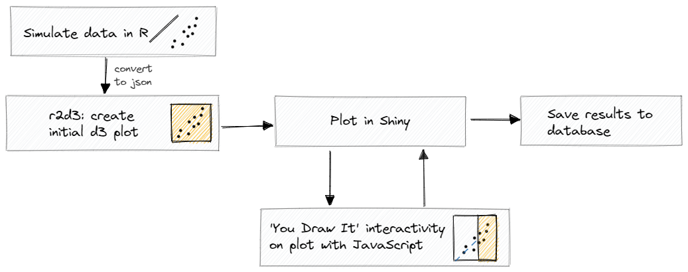
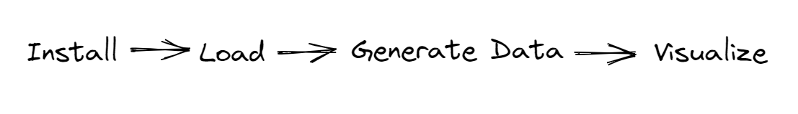

Overview of the youdrawitR Package
Interactive Data Visualization in R
Dillon Murphy, Cal Poly - San Luis Obispo, CA
Introduction
Google Summer of Code 2023
Overview of the youdrawitR Package
Interactive Data Visualization in R
Engaging users with data
Background for Measuring Trends
- Fitting Trends by Eye – maneuvering a string, black thread, or ruler.

Motivations Behind Creating the Package
D3 is not intuitive for us R users
Add additional functionality for broader use
Getting Started with youdrawitR
Using youdrawitR
Install:
devtools::install_github("earobinson95/youdrawitR")Load:
library(youdrawitR)Data generation:
customDataGen()andlinearDataGen()Visualization:
drawr()
Package website:https://earobinson95.github.io/youdrawitR/
Data Generation with youdrawitR
Visualization with youdrawitR
Visualizing with drawr
More Examples:
Logistic Regression
# Generating data with logistic regression
# For this example, we'll need a binary response variable.
# Let's create a binary variable based on horsepower.
mtcars$high_hp <- ifelse(mtcars$hp > 120, 1, 0)
logistic_data <- customDataGen(
df = mtcars,
xvar = "mpg",
yvar = "high_hp",
regression_type = "logistic"
)
drawr(logistic_data,
title = "Probability High Horsepower vs MPG (Logistic)",
subtitle = "For mtcars dataset",
x_lab = "Miles per Gallon",
y_lab = "High Horsepower (1 = Yes, 0 = No)")More Examples:
Polynomial Regression & Customized Plot
# Generating data with polynomial regression of degree 2
poly_data <- customDataGen(
df = mtcars,
xvar = "mpg",
yvar = "hp",
regression_type = "polynomial",
degree = 2
)
# Customized drawr output
drawr(poly_data,
title = "Horsepower vs Miles per Gallon (Polynomial)",
subtitle = "For mtcars dataset",
x_lab = "Miles per Gallon",
y_lab = "Horsepower",
drawn_line_color = "red",
true_line_color = "rgba(0,255,0,.8)",
draw_region_color = "#FFFFFF",
show_tooltip = TRUE,
aspect_ratio = 1.5)More Examples:
Loess Regression
# Generating data with loess regression
loess_data <- customDataGen(
df = mtcars,
xvar = "mpg",
yvar = "hp",
regression_type = "loess",
span = 0.75
)
drawr(loess_data,
title = "Horsepower vs Miles per Gallon (Loess)",
subtitle = "For mtcars dataset",
x_lab = "Miles per Gallon",
y_lab = "Horsepower")Your Turn 1
Using the documentation help(drawr), change xxxx
Embedding youdrawitR into HTML
Using youdrawitR with Shiny
Integrating Into Shiny
- Displaying Visualizations
- Retrieving Drawn Data
‘Can You Draw It?’ Shiny App
- Real time interaction with plot:
- Change data sources: Input, Simulate, or Use R Dataset
- Drawing, saving users drawn lines, and resetting functionalities
- Customization: Color changes, tooltips, confidence intervals.
- Access:
- Open in Browser or run locally
Try For Yourself
Drawing Cat Competition
Importance & Uses of youdrawitR
Potential Applications
- Engaging educational tool.
- Personal data visualization projects.
- Encouraging active participation in data interpretation.
- Testing graphics for perception.
Future Directions for youdrawitR
- Continuous development.
- Potential enhancements based on feedback.
- Expansion of features and functionalities.